04. RF Prediction
Version: CE Express v7.2
1. Objective
This module explains how to run RF predictions in CE Express and how to interpret and manage results. It covers both rapid "what-if" checks and full project predictions, including result visualization, comparison, and network-based calculation workflows.
By the end of this exercise, participants will be able to: - Run Quick RF Predictions to test configuration changes without modifying the database - Run full RF Prediction calculations for one or multiple cells - Understand how geodata is used in prediction calculations - Visualize results on the map, customize symbology, and create reusable symbology presets - Compare multiple prediction outputs and interpret differences - Use Networks to calculate predictions without manual object selection and track calculation status
2. Key Concepts
2.1.1 What Is an RF Prediction in CE Express?
An RF prediction is a calculation that produces map-based outputs (rasters) representing expected signal or performance across an area. Predictions are influenced by: - Network objects (cells, sites, antennas) - Configuration parameters (frequency, power, height, downtilt, bandwidth, MIMO, etc.) - Geodata (terrain elevation, clutter/land use, obstacles) - Equipment definitions and models (antenna patterns, propagation models, calculation templates)
The outputs can be used to: - Evaluate scenarios and alternatives - Support planning and feasibility assessments - Produce documentation and map products - Compare configurations before and after parameter changes
2.1.2 Quick Prediction vs Full RF Prediction
CE Express provides two complementary calculation approaches: - Quick RF Prediction - Designed for rapid "what-if" testing - Uses object values as a starting point but does not write changes back to the database - Ideal for comparing parameter variants (e.g., different azimuths or tilts) - RF Prediction - Runs full calculations based on project configuration and selected objects - Results are tracked in Prediction History - Supports multi-object predictions and more structured workflows
3. Initial Data and Prerequisites
This exercise assumes a prepared workspace containing: - Network objects created in previous exercises - Loaded geodata (terrain, clutter/obstacles) - Defined equipment and calculation models
4. Exercise
4.1 Step 1 – Open the Workspace
- Open the CE Express application: https://cecom2.cellular-expert.com/ce_express/
- From the workspace list, select the workspace used in the previous exercise.

4.2 Step 2 – Quick RF Prediction
Quick RF Prediction enables rapid calculations without permanently changing object parameters. This is useful for fast scenario testing and side-by-side comparison.
4.2.1 Run a Quick Prediction for a Specific Cell
- Zoom to the cell Cx002.
- Open the Quick RF Prediction tool.
- To snap the cell:
- Hold Ctrl
- Click on Cx002
The tool automatically reads coordinates and key parameters from the snapped cell.
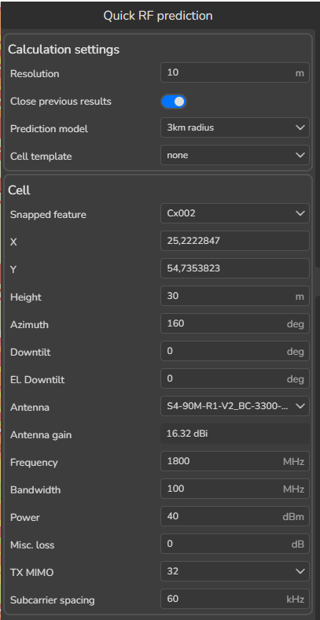
- Once parameters are populated, the calculation runs and results appear on the map.
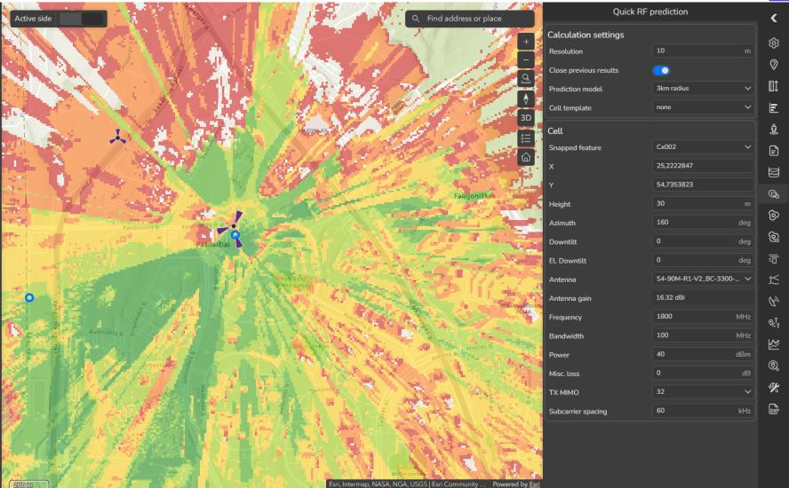
4.2.2 Verify Results in Layers
- Open the Layers tool.
- The newly generated coverage layer is listed under Prediction Results.
This confirms the result is loaded and available for review.
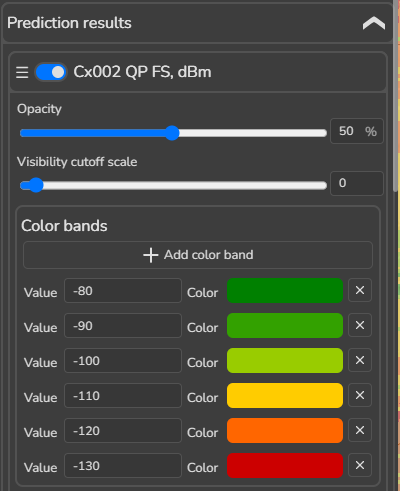
4.2.3 Adjust Resolution and Manage Result Handling
- In the Quick Prediction tool, change Resolution from 10 to 5.
- The result updates automatically.
Important behavior: By default, new results may replace/close previous results.
- Disable Close previous results to keep multiple variants for comparison.
4.2.4 Run a Variant Prediction by Changing a Parameter (Azimuth Example)
- Change Azimuth from 160 to 90.
- A new result is generated and added to Layers as a separate output.
4.2.5 Compare Two Results Using Swipe
Comparing results is essential when evaluating alternatives.
- In Layers, locate the Azimuth 90 QP FS, dBm quick prediction layer.
- Hover over the layer and click Compare.
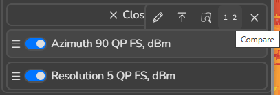
- Do the same for the Resolution 5 quick prediction result.
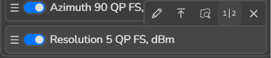
A swipe tool appears on the map, allowing visual comparison between two rasters.
- Review differences across the area.
- Disable Compare for both layers when finished.
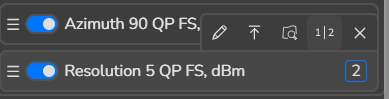
4.2.6 Run Additional "What-If" Scenarios
Run several additional quick predictions by changing one parameter at a time. Use the following test values:
| Parameter name | New Value |
|---|---|
| Height above ground | 40 |
| Downtilt | 5 |
| Tx MIMO | 8 |
| Power | 45 |
| Frequency | 3500 |
- Close the Quick Prediction tool.
- Close all quick prediction results when done.
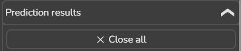
4.3 Step 3 – Understanding Cell Parameters Used in Predictions
RF prediction results are directly influenced by the parameters defined at the cell level. Understanding which parameters are used in calculations is essential for interpreting results correctly and ensuring consistency across different prediction runs.
Before running or comparing predictions, it is important to review these parameters and confirm that they reflect the intended scenario.
4.3.1 Why Cell Parameters Matter
Each prediction uses the active values stored in the selected cell objects. Even small differences in configuration can lead to noticeable changes in map outputs.
Cell parameters influence: - Signal strength distribution - Coverage extent and shape - Throughput and capacity estimates - Comparison validity between different scenarios
Ensuring parameter clarity helps avoid misinterpretation of results and unintended differences between calculations.
4.3.1.1 Geometry and Positioning Parameters
These parameters define the spatial behavior of the cell: - Geographic location (X, Y) - Height above ground - Azimuth - Mechanical and electrical downtilt
They directly influence: - Directional coverage - Main lobe orientation - Shadowing and overshoot effects
4.3.1.2 Transmission and Radio Parameters
These parameters control how energy is transmitted: - Frequency - Bandwidth - Transmit power - Duplex mode - Subcarrier spacing
They affect: - Propagation behavior - Signal attenuation - Throughput potential
4.3.1.3 Antenna and Equipment Parameters
These parameters describe how the signal is shaped: - Antenna model and pattern - MIMO configuration - Active antenna effects
They influence: - Beam shape and directionality - Spatial distribution of signal strength
4.3.1.4 Environmental and Model Parameters
These parameters define how the environment is considered: - Propagation model - Model radius - Environmental assumptions
They ensure calculations are aligned with the intended level of detail and scenario scope.
4.3.2 Reviewing Parameters in the RF Prediction Tool
- Select Cx002 on the map.
- Open the RF Prediction tool.
- Enable 5G calculations.
The RF Prediction tool reads all relevant parameters directly from the selected cell.
Expand its parameters (click on arrow) and run calculations with the same parameters as defined in the picture below.
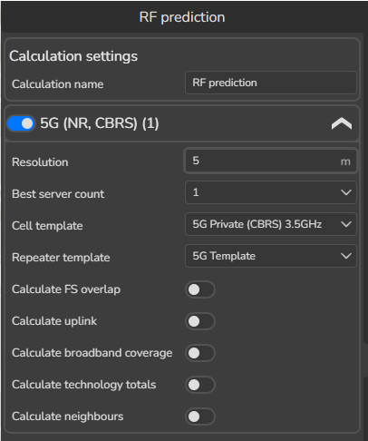
4.4 Step 4 – Prediction History and Result Management
All RF Predictions are tracked in Prediction History, where users can: - Monitor status (queued, running, finished) - Open results - Export outputs - Keep a record of scenario runs
- Open Prediction History.
- Locate the most recent calculation.
- Review status and available results.
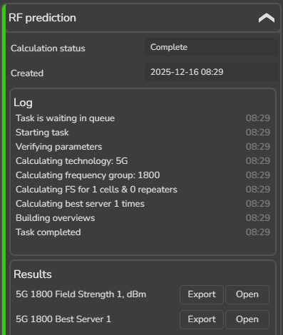
4.4.1 Open a Result on the Map
- In Prediction History, find 5G 1800 Field Strength 1, dBm.
- Click Open.
The raster is loaded on the map.
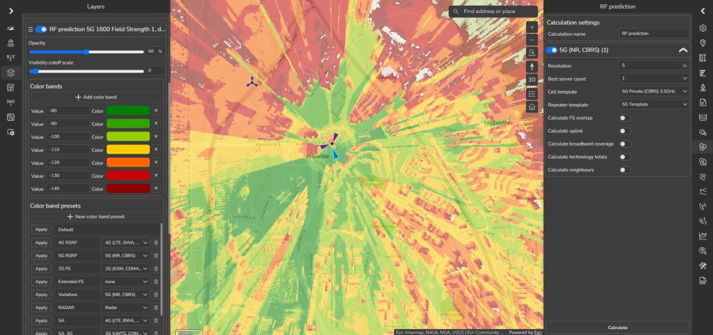
4.5 Step 5 – Visualizing Results and Creating Symbology Presets
Visualization is a critical part of working with RF prediction results. While calculations produce numerical values, symbology determines how those values are translated into an understandable visual map. Well-designed visualization allows users to quickly interpret results, identify patterns, compare scenarios, and communicate findings clearly.
In CE Express, prediction results are displayed as raster layers, and each raster can be fully customized using symbology settings.
4.5.1 Why Visualization Matters
Effective visualization helps users to: - Understand spatial distribution of signal or performance - Quickly identify strong, moderate, and weak areas - Compare multiple prediction results consistently - Prepare maps for reporting, reviews, and presentations
Without consistent symbology, identical results may appear very different, leading to confusion or misinterpretation.
4.5.2 Editing Raster Symbology
- Open the Layers tool.
- Locate the loaded RF prediction raster under Prediction Results.
- Click on the raster symbology icon to open visualization settings.
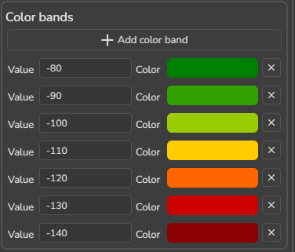
4.5.2.1 Thresholds and Value Ranges
Thresholds define how continuous values are grouped into ranges. - Each threshold represents a minimum and maximum value - Each range is displayed using a distinct color
Adjusting thresholds allows users to: - Emphasize specific value ranges - Align visualization with internal guidelines or requirements - Highlight areas of interest or concern
Threshold values can be edited directly, and new ranges can be added or removed as needed.
Define new colors and thresholds based on the picture below.
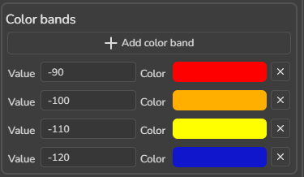
4.5.2.2 Adjusting Opacity
Opacity controls layer transparency.
Adjust opacity to: - View prediction results together with buildings, terrain, or roads - Overlay multiple prediction results - Reduce visual dominance of a single raster
Balancing opacity helps maintain spatial context while still highlighting prediction values.
Change opacity value to 40%
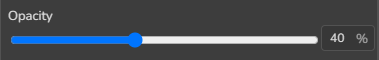
4.5.3 Creating a Symbology Template (Preset)
Symbology presets allow users to save and reuse visualization settings, ensuring consistency across different predictions, projects, and users.
- In the symbology panel, click + New color band preset.
- Define:
- Template name: 5G RSRP Symbology
-
Click Save preset.
-
Define technology:
4.6 Step 6 – Using Profiles to Investigate Weak or Marginal Areas
RF prediction maps often reveal areas with lower values or gradual degradation toward the cell edge. While map colors indicate where weaker or marginal areas are located, the Profile tool helps explain why those areas appear weak by providing a detailed view along a specific path.
This step connects area-based prediction results with path-based inspection, allowing users to move from visual observation to deeper understanding.
4.6.1 Purpose of Using Profiles with Prediction Results
Using profiles in combination with prediction maps helps to: - Identify physical causes of weak signal areas - Understand whether limitations are caused by terrain, buildings, or vegetation - Verify whether weak areas are expected or abnormal - Support explanation of results during reviews and discussions
Profiles provide a clear, intuitive cross-section of the environment between a transmitter and a selected location.
4.6.2 Selecting an Area of Interest
- Review the RF prediction raster on the map.
- Identify areas shown in lower-value colors (for our case – blue color).
These areas typically represent: - Greater distance from the transmitter - Increased obstruction by terrain or buildings - Reduced line-of-sight conditions
4.6.3 Running a Profile for a Weak Location
- Open the Profile tool.
- Hold Ctrl and snap the transmitter to Cx002.
- Select a receiver point inside a weak or marginal area identified on the map.
Once the receiver is defined, the profile is calculated and displayed immediately.
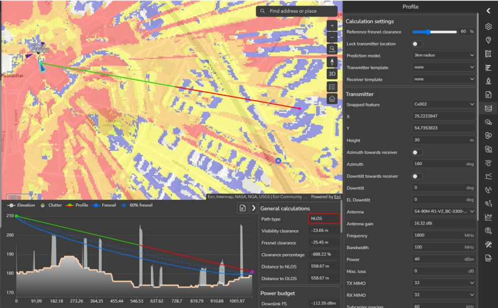
4.6.4 Interpreting the Profile Output
The profile view shows: - Terrain elevation along the path - Buildings and vegetation intersecting the path - The direct path between transmitter and receiver
Color indicators highlight visibility conditions along the path: - Clear sections indicate unobstructed paths - Obstructed sections show where terrain or structures block or reduce visibility
This visual explanation clarifies why signal levels decrease in the selected area.
Close Profile tool (click on Profile tool).
Remove prediction results.
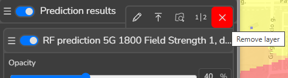
4.7 Step 7 – RF Prediction for Multiple Cells
Single-cell predictions are useful for focused analysis, but many real scenarios require understanding the combined effect of multiple cells operating together. Multi-cell RF prediction allows users to evaluate how several transmitters interact across an area and how their combined influence shapes overall results.
4.7.1 Purpose of Multi-Cell Predictions
Running predictions for multiple cells helps to: - Understand combined coverage from several transmitters - Identify overlapping areas and coverage continuity - Observe how different directions and configurations interact spatially - Produce results that better represent real operational conditions
Compared to single-cell predictions, multi-cell results provide a broader and more realistic picture of the environment.
4.7.2 Selecting Multiple Cells
- On the map, select Cx001, Cx002, and Cx003.
- Verify that all selected cells are highlighted.
Only selected objects will be included in the calculation, so careful selection is important to ensure correct results.
4.7.3 Running the RF Prediction
- With all three cells selected, open the RF Prediction tool.
- Review and confirm calculation parameters as defined in the training reference.
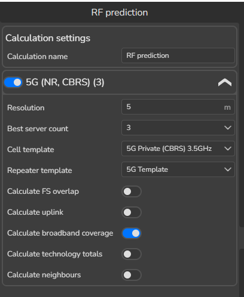
- Click Calculate.
The system creates a single prediction task that includes all selected cells.
4.7.4 Monitoring Calculation Progress
- Open Prediction History.
- Locate the newly created prediction task.
Prediction History displays: - Current calculation status (queued, running, finished) - Associated prediction outputs - Time and configuration context
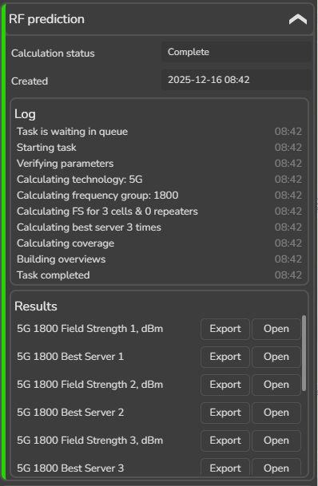
This allows users to monitor long or complex calculations without keeping the prediction tool open.
4.7.5 Loading and Reviewing Multi-Cell Results
Once the calculation is finished:
- In Prediction History, open 5G 1800 Field Strength 1, dBm.
- The raster result is loaded on the map.
The displayed map now represents the combined field strength contribution from all selected cells.
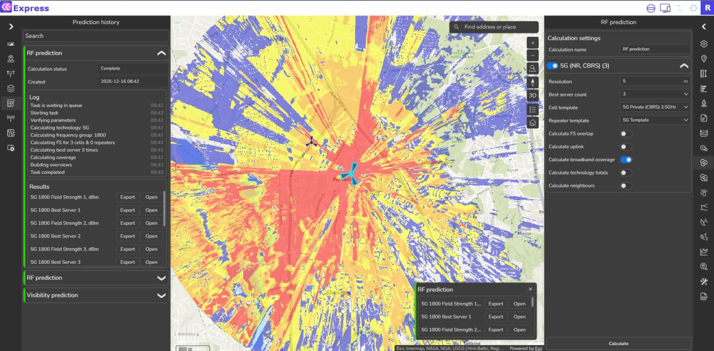
4.7.6 Applying Consistent Symbology
- Open the Layers tool.
- Apply the saved 5G RSRP Symbology preset to the multi-cell raster.
Using the same symbology preset ensures: - Consistent interpretation across single-cell and multi-cell results - Reliable visual comparison between scenarios - Clear communication of results in reviews and reports
4.8 Step 8 – Throughput Predictions and Symbology
- In Prediction History, open 5G 1800 Throughput, Mbps.
- Review default symbology.
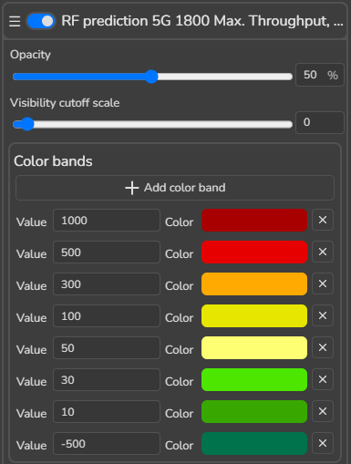
- Apply updated symbology based on the training reference.
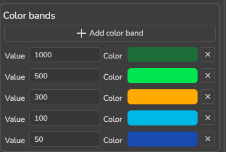
- Save the symbology if it will be reused.
4.9 Step 9 – Editing Object Data and Re-Running Predictions
To observe how configuration changes affect outputs, update key cell parameters, then re- run predictions.
4.9.1 Edit Cell Parameters in the Attribute Table
- Open Features tool.
- Open the Cells attribute table.
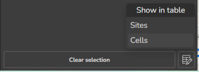
- Change the following parameters:
| Parameter | New Value |
|---|---|
| Bandwidth | 20 |
| Subcarrier_spacing | 15 |
| Tx_mimo | 4 |
| Rx_mimo | 4 |
| Active antenna effect | 0 |
- Return to full map screen using map overlay controls.
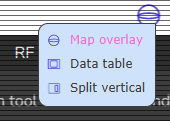
4.9.2 Re-Run Predictions
- Select Cx001, Cx002, Cx003.
- Run RF Predictions again.
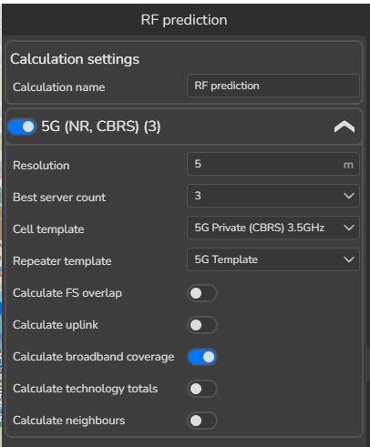
4.9.3 Compare New vs Previous Results
- Open the newly calculated 5G 1800 Throughput layer.
- Compare it with the previous throughput result.
- Use the Identify tool to inspect values at the same locations.
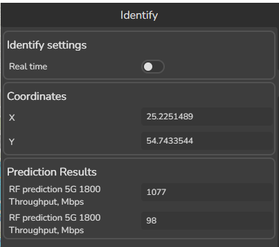
This helps quantify changes rather than relying only on color differences.
- Close all results when finished.
4.10 Step 10 – Managing Predictions Using Networks
As projects grow in size and complexity, manually selecting objects for every prediction becomes inefficient and error-prone. Networks provide a structured and scalable way to manage RF predictions by grouping objects automatically based on defined rules and attributes.
A Network in CE Express acts as a dynamic selection and calculation container. Instead of selecting objects on the map, users define what should be included, and the system maintains that selection automatically.
4.10.1 Why Use Networks
Networks are especially useful when: - Working with a large number of cells - Repeating predictions regularly - Automatically publish coverage results and network features to ArcGIS Enterprise Portal or ArcGIS Online - Automatically calculate statistic - Managing multi-band or multi-layer configurations - Ensuring consistency across prediction runs
Using Networks helps to: - Reduce manual selection errors - Ensure repeatable and auditable calculations - Clearly identify when results are missing or outdated - Support long-term project maintenance
4.10.2 Creating a Network
- Open the Networks tool.
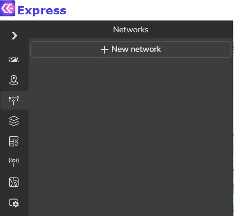
- Click + New Network.
- Define network parameters as shown in the training reference.
Typical configuration elements include: - Feature type: Cells - Attribute filter (technology)
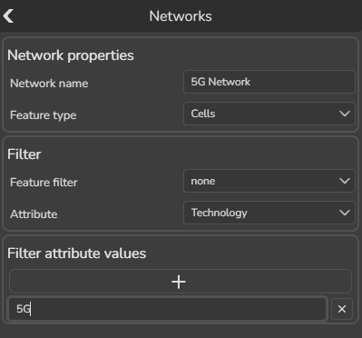
- Click Accept.
The network is created and listed in the Networks panel.
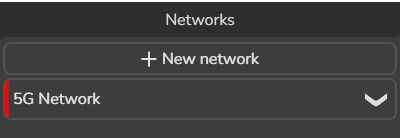
4.10.3 Interpreting Network Status
Each network displays status indicators that provide immediate feedback: - Red – The network has not been calculated or results are outdated - Yellow – Calculation is in progress - Green – Network results are up to date
Expanding the network shows: - Number of included objects - Number of objects without results - Available prediction outputs
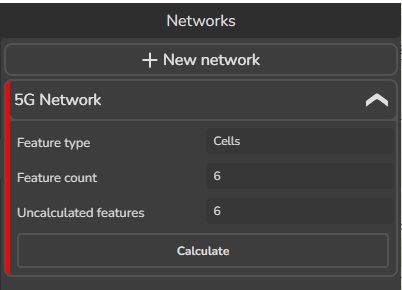
These indicators help users quickly understand whether further action is required.
4.10.4 Why Networks May Require Recalculation
A network will require recalculation when: - Object parameters are modified - New objects matching the network rules are added - Prediction settings are changed
The status indicator changes accordingly, ensuring users are aware that results no longer reflect the current configuration.
4.10.5 Benefits of Network-Based Prediction Management
Using Networks provides several advantages: - Centralized management of prediction scope - Clear separation between object configuration and calculation execution - Improved traceability of results - Easier collaboration across teams
Networks transform prediction workflows from manual, one-time actions into repeatable, rule- driven processes.
5. Step 11 – Calculate a Network
- In the Network tab, click Calculate.
- The RF Prediction tool opens.
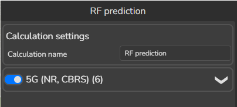
- Configure parameters as shown in the training reference.
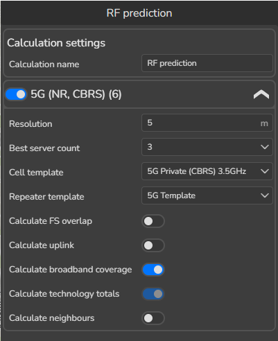
- Click Calculate network.
Network status changes: - Yellow = calculating - Green = calculated
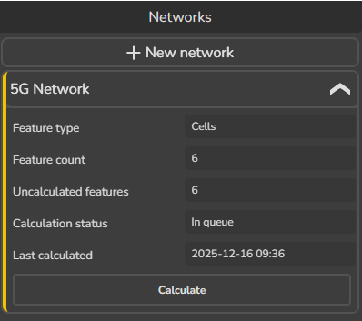
A task is also created in Prediction History.
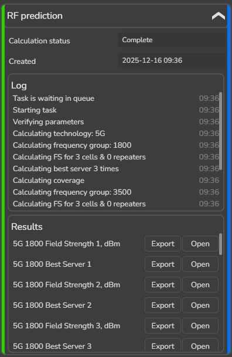
5.1.1 Review Network Results Structure
When finished, open the network results list.
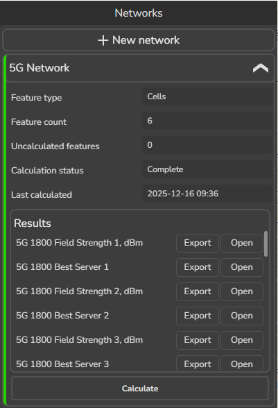
You may see multiple Field Strength results. This often indicates that the network contains multiple frequency groups, and CE Express splits calculations by group automatically.
Example frequency groups: - 1800 - 3500
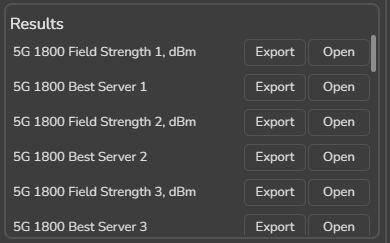
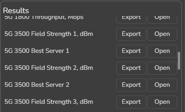
Load results for each group to compare outputs and understand multi-layer behavior.
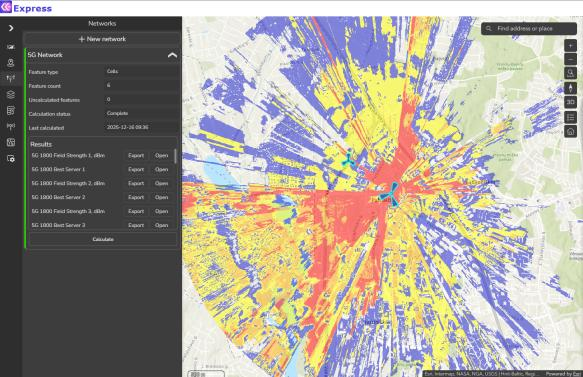
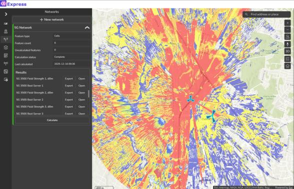
6. Summary and Key Takeaways
This module provided a complete walkthrough of RF prediction workflows in CE Express, from quick exploratory checks to structured, multi-cell and network-based calculations. The focus was on understanding not only how to run predictions, but also how to interpret, compare, and manage results in a clear and repeatable way.
Key takeaways from this module include: - RF predictions transform configuration and environment data into spatial insight. Prediction results reflect the combined influence of object parameters, geodata, equipment models, and calculation settings. - Quick RF Prediction is best suited for rapid exploration and comparison. It allows users to test changes without modifying stored object parameters and is ideal for early analysis and scenario evaluation. - Full RF Prediction provides structured, traceable results stored in Prediction History, making it suitable for formal analysis, documentation, and repeatable workflows. - Prediction History serves as a central record of calculations, enabling users to track progress, reopen results, and compare scenarios over time. - Visualization and symbology play a critical role in interpreting results. Clear thresholds, meaningful colors, and consistent symbology presets ensure results are easy to understand and communicate. - Profiles complement prediction maps by explaining why certain areas appear weak or strong. Combining area-based predictions with path-based inspection increases confidence in conclusions. - Multi-cell predictions reveal the combined influence of several transmitters and provide a more realistic view of overall behavior than single-cell analysis alone. - Frequency-group separation allows users to analyze each layer independently. Loading and comparing results per group helps explain multi-layer behavior and avoids ambiguous interpretations. - Networks enable scalable and reliable workflows. Rule-based grouping, status indicators, and automated recalculation support long-term project maintenance and reduce manual effort.